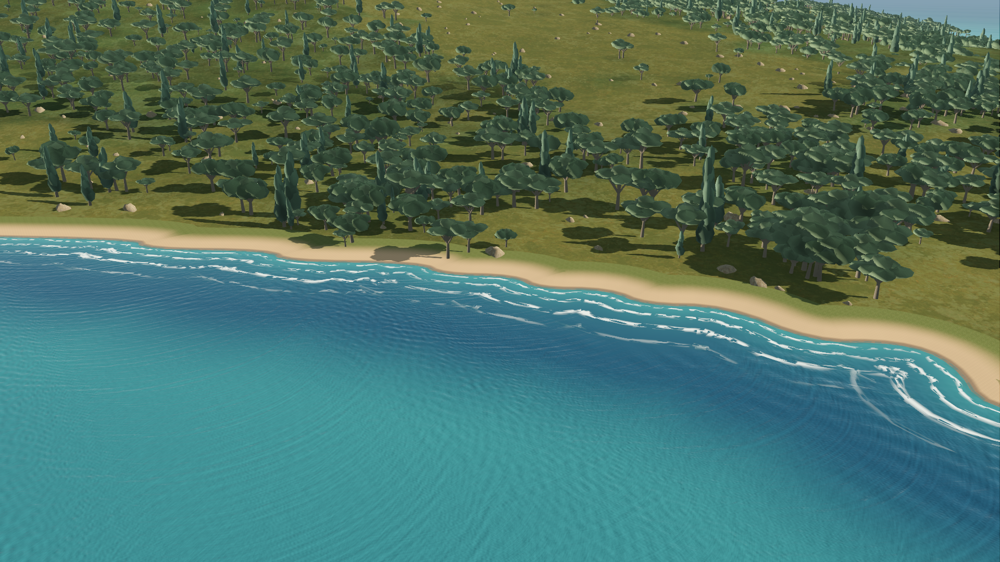

Pellaro · southern Calabria
Four kilometres of focused shoreline near Rhegion: directed breaking foam, retreating wash, wet beach and a local ground transition. Actual production-game captures with full scenery readiness. Implementation and checks
0.000 s

The viewer plays 48 captured states at eight samples per second. It is an animation review, not an FPS benchmark. The live game animates continuously.
Launch the interactive game view with .\godot-prototype\coastal-focus-preview.ps1. The normal game also accepts --view=pellaro.